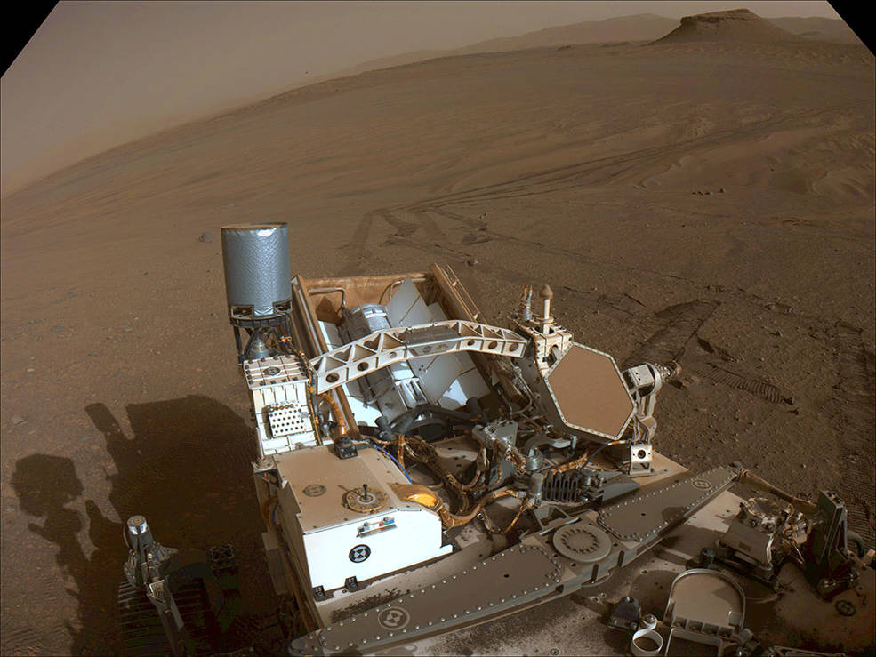
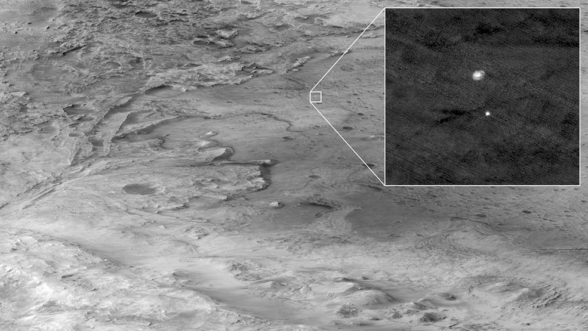

After completing the first sample depot on another world, the rover continues its hunt for Mars rocks worthy of study on Earth.
NASA’s Perseverance rover will celebrate its second anniversary on the surface of Mars Saturday, Feb. 18. Since arriving at Jezero Crater in 2021, the six-wheeled, nuclear-powered rover has been examining geologic features and collecting samples of the Red Planet that are central to the first step of the NASA-ESA (European Space Agency) Mars Sample Return campaign. Scientists want to study Martian samples with powerful lab equipment on Earth to search for signs of ancient microbial life and to better understand the processes that have shaped the surface of Mars.

“Anniversaries are a time of reflection and celebration, and the Perseverance team is doing a lot of both,” said Perseverance project scientist Ken Farley of Caltech in Pasadena. “Perseverance has inspected and performed data collection on hundreds of intriguing geologic features, collected 15 rock cores, and created the first sample depot on another world. With the start of the next science campaign, known as ‘Upper Fan,’ on Feb. 15, we expect to be adding to that tally very soon.”